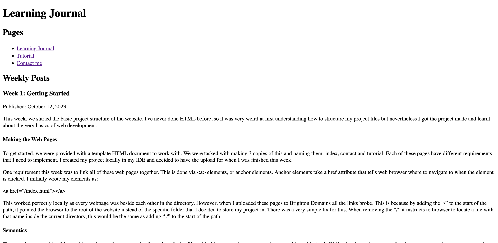

Week 1: Getting Started
Published:
This week, we started the basic project structure of the website. I've never done HTML before, so it was very weird at first understanding how to structure my project files but nevertheless I got the project made and learnt about the very basics of web development.
Making the Web Pages
To get started, we were provided with a template HTML document to work with. We were tasked with making 3 copies of this and naming them: index, contact and tutorial. Each of these pages have different requirements that I need to implement. I created my project locally in my IDE and decided to have the upload for when I was finished this week.
One requirement this week was to link all of these web pages together. This is done via <a> elements, or anchor elements. Anchor elements take a href attribute that tells web browser where to navigate to when the element is clicked. I initially wrote my elements as:
<a href=”/index.html”></a>
This worked perfectly locally as every webpage was beside each other in the directory. However, when I uploaded these pages to Brighton Domains all the links broke. This is because by adding the “/” to the start of the path, it pointed the browser to the root of the website instead of the specific folder that I decided to store my project in. There was a very simple fix for this. When removing the “/” it instructs to browser to locate a file with that name inside the current directory, this would be the same as adding “./” to the start of the path.
Semantics
The most important thing I learnt this week was about semantics. I was loosely familiar with this concept from my experience working with Apple Wallet, but I wasn't sure exactly what it meant. As it turns out semantics are very useful! Semantics were introduced with HTML5 and provide a better description of what element of each webpage does.
For example, there is the <header> element now. This tells the browser that this is the main title area, the heading for the webpage. Previously we had to markup loads of <div> elements with various CSS class attributes which weren't very clear. However, web browsers thankfully still support older elements so that the treasure trove of existing web pages aren't lost to time. It also reduced the accessibility of a webpage by making it harder for users to apply custom style sheets that make webpages easier for them to use as the class attribute could be inconsistent from page to page.
Accessibility
Speaking of accessibility, I never knew there were so many standards for the web. The W3C maintains the primary set of standards for a webpage to abide by, to make web-based experiences rich, open and accessible. These are known as the W3C standards. Accessibility means a lot to many people, and I'm glad to see that there are various standards in place to keep the web open and welcoming to everyone.
Additionally, the W3C provides a tool known as the W3C Markup Validation Service that allows you to check if your website is W3C standards compliant. It is something I will be using extensively during my projects development as I know it is important. Not only for accessibility but also for CSS to function as expected.
Further Research
In previous projects I sometimes made changes to them that caused major components to break without my knowledge and when I later went back to the system, I was unaware of the exact changes and so it took quite some time to debug my problems and repair the system. I knew for this assessment that I needed to change my workflow.
For this project I decided to integrate Git into my workflow. Git is a version control system that allows you to take snapshots of your project so that you can track, and rollback changes made to a project over time. It is used a lot in the industry and is also very common amongst open-source developers. My IDE of choice for this project was WebStorm by IntelliJ which has very robust Git integration alongside various automations that aid me in development. The initial commits of my project were very messy as I was still trying to understand how to make a “good” commit but eventually (after reinitialising the repository a lot) I made the repository clean, and I am now keeping better track of my projects.
Additionally, I researched more into the capabilities of WebStorm. I found out that it has a built-in SFTP client that allows me to interact with the web server and its contents without needing to leave the IDE. It also has an automation that allows me to automatically upload the current commit of my local repository to Brighton Domains without needing to log in or change the files directly. This has already saved me a lot of time and means that I do not need to rely on a hosting service like GitHub for storing my project.
Progress Snapshot
To end off, I would like to keep a record of the visual progress of the website. Currently, all webpages look nearly identical but over time as I learn CSS I hope for these pages to look amazing.
